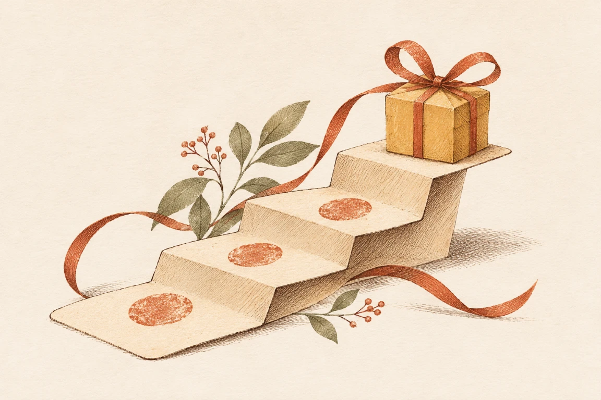

Piensa en un cliente que ya visita tu negocio cada semana. Le das una tarjeta de puntos, se inscribe y sigue viniendo. ¿Funcionó el programa? Tal vez le gusta sentirse reconocido. Pero todavía no sabemos si vino una vez más gracias a la tarjeta.
Esa diferencia está en el centro de la pregunta. La investigación sí encuentra que los programas pueden cambiar las compras, aunque resulta más difícil cambiar el cariño o la preferencia por una marca (Belli et al., 2022). Para un propietario, lo útil es entender qué puede esperar y qué necesita comprobar.
¿Volvió por el premio o ya iba a volver?
Es fácil entusiasmarse con un informe que dice «nuestros miembros compran más». El detalle es que los mejores clientes también pueden ser los primeros en inscribirse.
Eso ocurrió en el análisis de varios programas de supermercados: al tener en cuenta que los participantes ya eran distintos, el efecto estimado del programa se hizo mucho menor (Leenheer et al., 2007).
No significa que debas dejar de premiar a tus habituales. Significa que conviene separar dos objetivos: agradecerles su preferencia y conseguir compras que no habrían ocurrido. Ambos pueden tener sentido, pero no se miden igual.
También importa de dónde parte cada persona. En un seguimiento de tiendas de conveniencia, los clientes que ya compraban mucho canjearon más premios sin aumentar sus compras; los menos activos sí mostraron aumentos. El estudio observó esas diferencias, aunque no podía atribuirlas por completo al programa (Liu, 2007).
Haz que el siguiente premio se sienta alcanzable
Un experimento en un lavadero de autos ayuda a entenderlo. A unos clientes les dieron una tarjeta de ocho espacios vacíos. A otros, una de diez con dos sellos de bienvenida. A todos les faltaban exactamente ocho compras.

La tarjeta con avance inicial se completó más: 34 % frente a 19 %. No porque exigiera menos compras, sino con el mismo esfuerzo pendiente presentado de otra forma (Nunes & Drèze, 2006).
No es una receta universal ni una prueba de mayor rentabilidad. Pero ofrece una idea que vale la pena probar: que el cliente entienda cuánto lleva y qué le falta. «Te faltan dos visitas» es una propuesta más concreta que una cifra de puntos sin contexto.
Que sea fácil usarlo también cuenta
Un premio atractivo sirve de poco si nadie entiende cómo conseguirlo. Y tener una buena idea no garantiza que funcione al llevarla al mostrador.
En un ensayo con cafeterías laborales del Reino Unido, las tarjetas y muestras gratuitas no produjeron un aumento claro de las ventas de platos vegetales. Las entrevistas sugirieron poca difusión y uso; el estudio, además, fue breve y pequeño (Food Standards Agency et al., 2024).
Antes de cambiar el premio, revisa la experiencia: ¿el equipo sabe explicarlo?, ¿el cliente ve su avance?, ¿puede canjear sin una conversación complicada? Son preguntas prácticas que proponemos a partir de ese problema, no una garantía de éxito.
El premio tiene que caber en tus números
No confundas una venta con lo que te queda de ella. Si cobras Q40 y gastas Q24 en atender esa compra, quedan Q16 antes de los costos fijos.
Si premios y operación adicional cuestan Q160, necesitarías 10 compras adicionales de ese tipo para cubrirlos.
Ejemplo inventado: Q160 ÷ Q16 = 10. No es una tarifa ni una promesa de retorno.
La palabra importante es adicionales. Diez compras de miembros no bastan si esas personas habrían comprado igualmente. Y el cálculo cambia si varían los costos o el tamaño de la compra. Anota también los premios que ya prometiste y todavía faltan por entregar.
Empieza con una pregunta pequeña
En lugar de pedirle al programa que «aumente la fidelidad», prueba algo concreto: que más clientes nuevos hagan una segunda visita.
Elige un plazo razonable para tu negocio, un premio que puedas costear y una fecha para revisar. Mira las visitas, los canjes y las dificultades que encuentra el personal. Compara con lo que ocurría antes, recordando que la temporada, los precios y otras promociones también influyen.
Un programa puede dar un buen motivo para regresar. Para saber si el tuyo lo está consiguiendo, necesitas una promesa fácil de entender, una experiencia que la cumpla y números que puedas interpretar con honestidad.
Sobre la investigación y sus límites
Esta es una selección comentada de cinco fuentes, no una revisión sistemática. Leímos los textos completos de Leenheer et al., Liu, Nunes y Drèze, y el informe de la Food Standards Agency. Para Belli et al. consultamos el resumen editorial; contiene una síntesis de 429 tamaños de efecto, no 429 estudios independientes.
Leenheer y Liu analizan datos observacionales. Nunes y Drèze asignaron 300 tarjetas al azar en un establecimiento. En el ensayo británico, 29 de 32 locales completaron el estudio; no encontrar un resultado estadísticamente significativo no demuestra un efecto exactamente nulo.
Estos trabajos no evalúan PuntosFieles ni establecen un resultado específico para Guatemala. PF tiene un interés comercial en el tema. Las recomendaciones prácticas son nuestra interpretación; el ejemplo de costos es hipotético y las ilustraciones son conceptuales.
Referencias
Para quien quiera seguir leyendo, estas son las fuentes.
- Belli, A., O’Rourke, A.-M., Carrillat, F. A., Pupovac, L., Melnyk, V., & Napolova, E. (2022). 40 years of loyalty programs: How effective are they? Generalizations from a meta-analysis. Journal of the Academy of Marketing Science, 50(1), 147–173. https://doi.org/10.1007/s11747-021-00804-z
- Food Standards Agency, Gold, N., Cornel, P., Zhuo, S., Thornton, K., Riddle, R., McPhedran, R., Vega, L., & Zamperetti, L. (2024). Exploring the impact of giving free food samples and loyalty cards on food choices: A stepped wedge trial in workplace food outlets. FSA Research and Evidence. https://doi.org/10.46756/sci.fsa.paq622
- Leenheer, J., van Heerde, H. J., Bijmolt, T. H. A., & Smidts, A. (2007). Do loyalty programs really enhance behavioral loyalty? An empirical analysis accounting for self-selecting members. International Journal of Research in Marketing, 24(1), 31–47. https://doi.org/10.1016/j.ijresmar.2006.10.005
- Liu, Y. (2007). The long-term impact of loyalty programs on consumer purchase behavior and loyalty. Journal of Marketing, 71(4), 19–35. https://doi.org/10.1509/jmkg.71.4.019
- Nunes, J. C., & Drèze, X. (2006). The endowed progress effect: How artificial advancement increases effort. Journal of Consumer Research, 32(4), 504–512. https://doi.org/10.1086/500480
Ilustraciones creadas para PuntosFieles con asistencia de IA. Edición en revisión · .